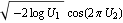
are normally distributed, where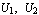
are uniform random variable.But Mathematica fails to work out the distribution of
The Sum of 12 Uniform Random Variables
In Monte Carlo option pricing, one needs to generate standard normal random variables.
Perhaps the simplest way to do this is to use the sum of 12 uniform variables.
Here are the plots and the probability density functions of the sums of uniform random variables.
The Sum of 1, 2, and 3 Uniform Variables
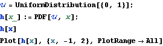
| |
|
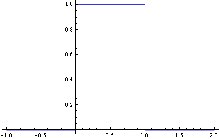
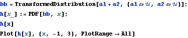
| |
|
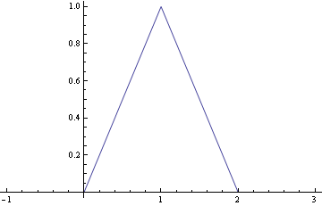
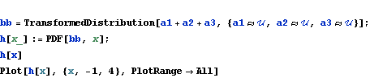
| |
|
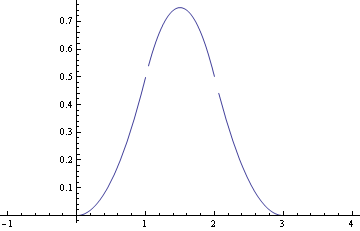
The Sum of 12 Uniform Variables
The first figure shows the plot of a standard normal random variable (red line) and that of the sum of 12 uniform variables (blue line).
The second one shows their difference.
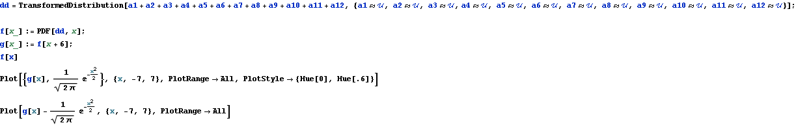
| |
|
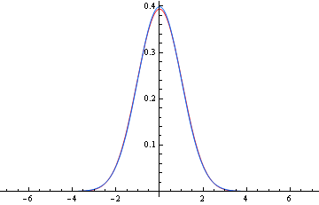
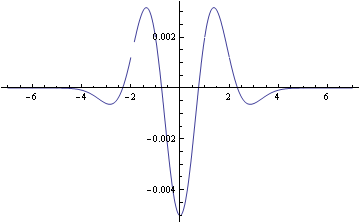
Box-Muller
According to the Box-Muller algorithm, the random variable  
But Mathematica fails to work out the distribution of  .
.
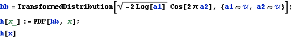
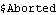